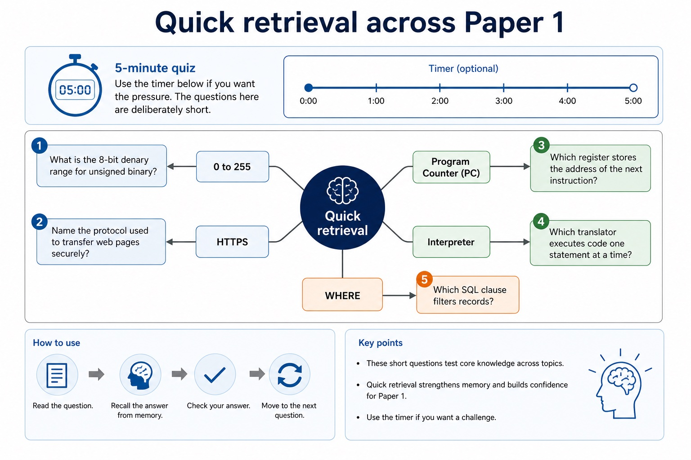
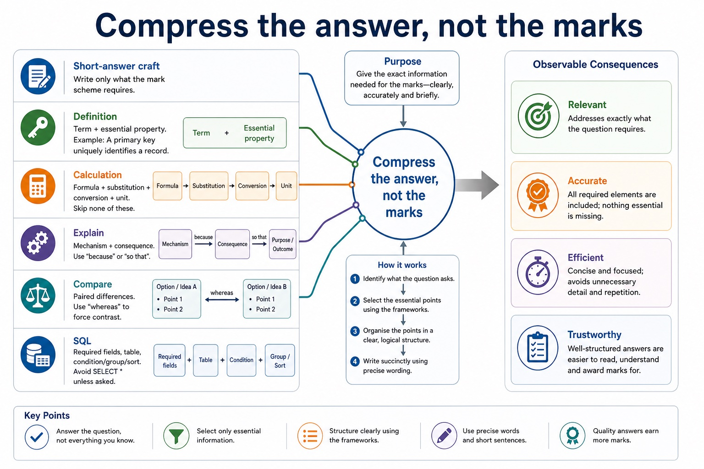
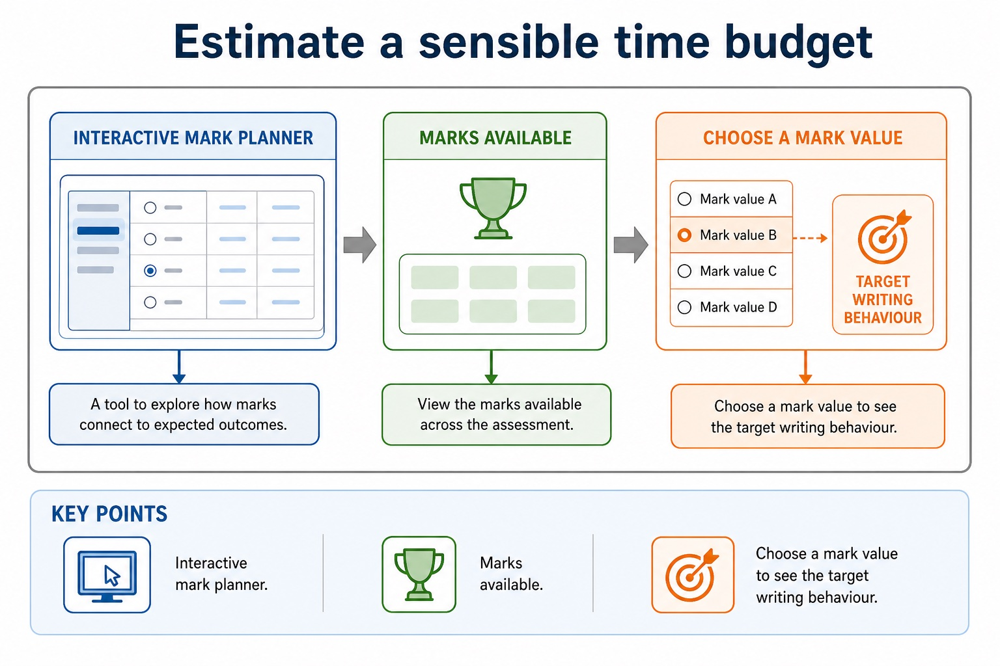

Short answers are not tiny essays. They are marks delivered on time.
This lesson turns Paper 1 knowledge into timed short-answer performance. You will practise quick
recall, decide how much to write for the marks available, and self-mark using CIE-style wording.
The aim is controlled speed: enough detail for marks, no decorative paragraphs.
Paceallocate time from mark value and avoid over-writing low-mark answers
Answerwrite concise definitions, calculations, comparisons and explanations
Markuse strict wording to identify missing mechanism, unit or context
1 markprecise term or value2 markspoint + explanation / method + answer4-6 marksseveral distinct points with scenario links
If a 2-mark question gets a 12-line answer, the clock has already filed a complaint.
Why this matters
Students often know the content but lose marks by spending too long on early questions or writing vague extra words.
Common trap
Fast is not the same as vague. A short answer still needs exact terminology, units, or mechanism.
Warm-up hook
How much should you write?
The mark value is a hint, not a decorative number. The examiner is not paying rent for your paragraphs.
Choose a card to see the expected writing depth.
Timing rules
A practical mark-per-minute model
Mark value
Target time
Answer behaviour
1 mark
30-45 seconds
give the term/value directly, then stop
2 marks
1-2 minutes
two separate points, or point plus mechanism/consequence
3-4 marks
3-5 minutes
structured bullets, each carrying a mark-worthy idea
5-6 marks
6-8 minutes
plan briefly, then write distinct points with context
Chinese support: pace = 控制速度；mark value = 分值；concise = 简洁；distinct point = 独立得分点；self-mark = 自我批改。
A practical mark-per-minute model
A practical mark-per-minute model: source-grounded visual explanation.
Lesson fact: Timing rules
Lesson fact: Mark value
Lesson fact: Target time
Lesson fact: Answer behaviour
Lesson fact: 30-45 seconds
Lesson fact: give the term/value directly, then stop
Lesson fact: 1-2 minutes
Lesson fact: two separate points, or point plus mechanism/consequence
Lesson fact: 3-4 marks
Lesson fact: 3-5 minutes
Lesson fact: structured bullets, each carrying a mark-worthy idea
Lesson fact: 5-6 marks
5-minute quiz
Quick retrieval across Paper 1
Use the timer below if you want the pressure. The questions here are deliberately short.
1.What is the 8-bit denary range for unsigned binary?2.Name the protocol used to transfer web pages securely.3.Which register stores the address of the next instruction?4.Which translator executes code one statement at a time?5.Which SQL clause filters records?
Quick retrieval across Paper 1

Quick retrieval across Paper 1: source-grounded visual explanation.
Lesson fact: 5-minute quiz
Lesson fact: Use the timer below if you want the pressure. The questions here are deliberately short.
Lesson fact: 1. What is the 8-bit denary range for unsigned binary?
Lesson fact: 2. Name the protocol used to transfer web pages securely.
Lesson fact: 3. Which register stores the address of the next instruction?
Lesson fact: 4. Which translator executes code one statement at a time?
Lesson fact: 5. Which SQL clause filters records?
Short-answer craft
Compress the answer, not the marks
DefinitionTerm + essential property. Example: A primary key uniquely identifies a record.CalculationFormula + substitution + conversion + unit. Skip none of these.ExplainMechanism + consequence. Use "because" or "so that".ComparePaired differences. Use "whereas" to force contrast.SQLRequired fields, table, condition/group/sort. Avoid SELECT * unless asked.EvaluateBenefit, concern, safeguard, judgement. Keep each point short.
Compress the answer, not the marks

Compress the answer, not the marks: source-grounded visual explanation.
Lesson fact: Short-answer craft
Lesson fact: Definition Term + essential property. Example: A primary key uniquely identifies a record.
Lesson fact: Calculation Formula + substitution + conversion + unit. Skip none of these.
Lesson fact: Explain Mechanism + consequence. Use "because" or "so that".
Lesson fact: Compare Paired differences. Use "whereas" to force contrast.
Lesson fact: Evaluate Benefit, concern, safeguard, judgement. Keep each point short.
Self-marking
Three checks before moving on
Check
Question to ask
Fix if missing
Precision
Did I use the exact term or unit?
add the term, register, SQL clause, protocol or unit
Mechanism
Did I say how it works?
add the process: filters, encrypts, schedules, links, fetches
Context
Did I link to the scenario?
name the user, network, database, school or business from the question
Three checks before moving on
Three checks before moving on: source-grounded visual explanation.
Lesson fact: Self-marking
Lesson fact: Question to ask
Lesson fact: Fix if missing
Lesson fact: Precision
Lesson fact: Did I use the exact term or unit?
Lesson fact: add the term, register, SQL clause, protocol or unit
Lesson fact: Mechanism
Lesson fact: Did I say how it works?
Lesson fact: add the process: filters, encrypts, schedules, links, fetches
Lesson fact: Did I link to the scenario?
Lesson fact: name the user, network, database, school or business from the question
Interactive timer
Run a timed short-answer sprint
05:00
Run a timed short-answer sprint
Run a timed short-answer sprint: source-grounded visual explanation.
Lesson fact: Interactive timer
Interactive mark planner
Estimate a sensible time budget
Choose a mark value to see the target writing behaviour.
Estimate a sensible time budget

Estimate a sensible time budget: source-grounded visual explanation.
Lesson fact: Interactive mark planner
Lesson fact: Marks available
Lesson fact: Choose a mark value to see the target writing behaviour.
Interactive question triage
Decide: answer now, flag, or return later?
Choose a situation to decide a practical exam move.
Decide: answer now, flag, or return later?
Decide: answer now, flag, or return later?: source-grounded visual explanation.
Lesson fact: Interactive question triage
Lesson fact: Situation
Lesson fact: Choose a situation to decide a practical exam move.
Worked examples
Short answers trimmed to the mark value
Practice with instant checking
Quick-answer retrieval
Type concise answers. Use Show answer only after committing to a response.
Mistake debugging
Repair time-wasting or under-marked answers
Exam-style questions
Original Cambridge-style timed short-answer set with expandable MS
Attempt the set in 18-20 minutes, then mark strictly. The MS rewards concise precision, method and context.
Summary
Timed short-answer checklist
Spend by marksLow-mark questions need direct answers; high-mark questions need structure.
Write for creditTerm, method, mechanism, context, consequence, unit.
Move onIf topic recognition fails, flag it and return after securing easier marks.
Homework
Clear tasks for consolidation
Task 1: 12-minute sprintAnswer six short Paper 1 questions: two 1-mark, two 2-mark, one 4-mark and one 5-mark question. Stop at 12 minutes.Task 2: Strict self-markMark your sprint with a different colour. Label each lost mark as precision, mechanism, context, unit or timing.Task 3: RewriteRewrite the two weakest answers in half the words while keeping all mark-worthy points.